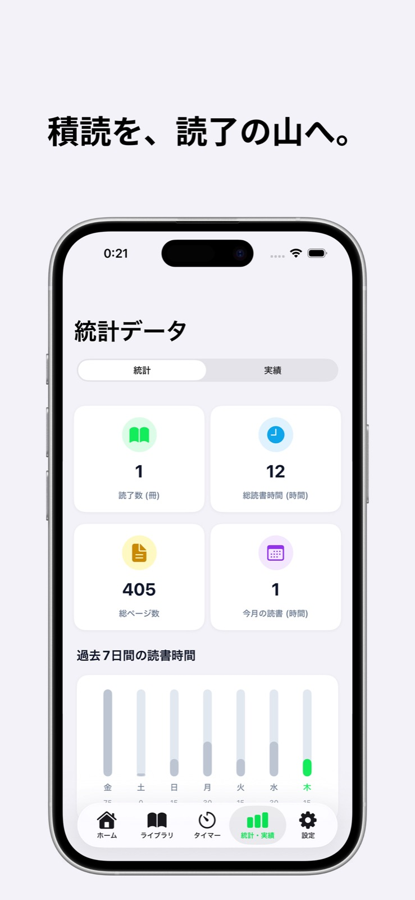

ReadingLog
リーディングログ
READING HABIT · 記録
読書時間と進捗を記録し、ヒートマップで毎日の積み重なりを見える形にする読書ログです。

時間と進捗を入力し、その日の読書を残せます。
読んだ日をヒートマップと連続日数で振り返れます。
進行中と読了を分け、バーコードから本を登録できます。
読書タイマー、実績、メモ、統計で習慣づくりを支えます。
Made for you